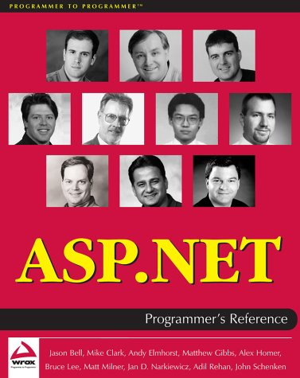
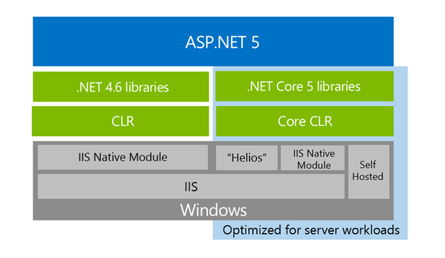
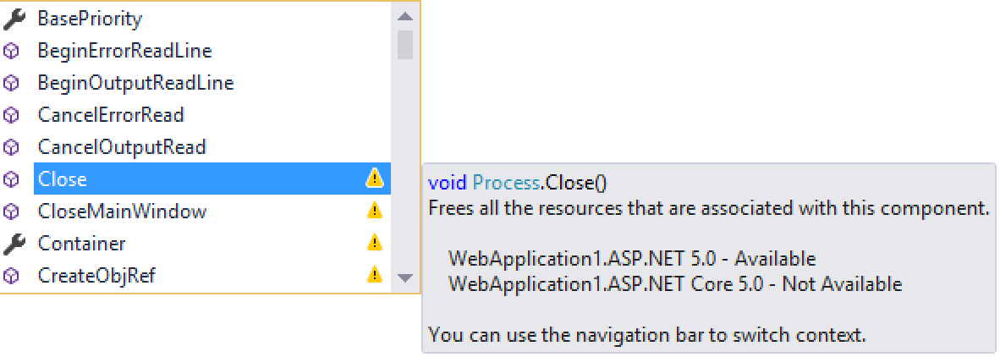
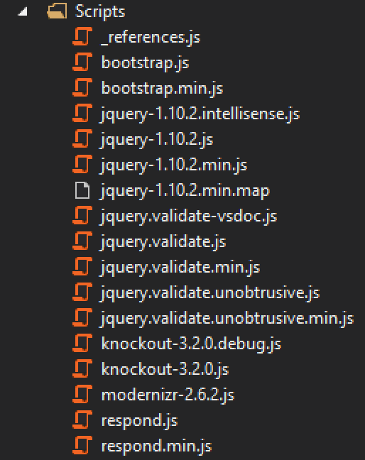
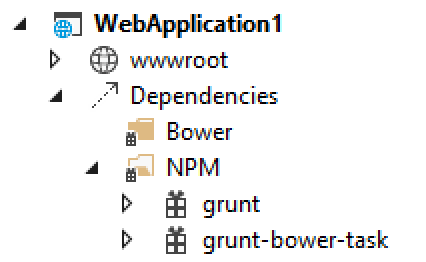
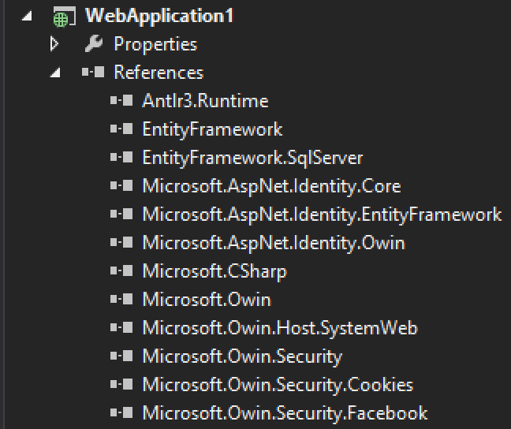
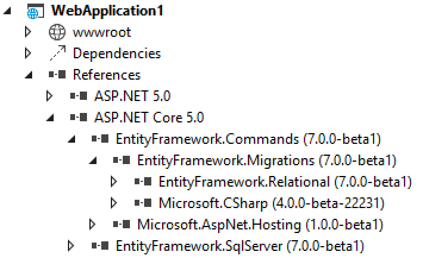

namespace System
namespace System.Web
val id : x:'T -> 'T
Full name: Microsoft.FSharp.Core.Operators.id
Full name: Microsoft.FSharp.Core.Operators.id
Multiple items
type HttpApplication =
new : unit -> HttpApplication
member AddOnAcquireRequestStateAsync : bh:BeginEventHandler * eh:EndEventHandler -> unit + 1 overload
member AddOnAuthenticateRequestAsync : bh:BeginEventHandler * eh:EndEventHandler -> unit + 1 overload
member AddOnAuthorizeRequestAsync : bh:BeginEventHandler * eh:EndEventHandler -> unit + 1 overload
member AddOnBeginRequestAsync : bh:BeginEventHandler * eh:EndEventHandler -> unit + 1 overload
member AddOnEndRequestAsync : bh:BeginEventHandler * eh:EndEventHandler -> unit + 1 overload
member AddOnLogRequestAsync : bh:BeginEventHandler * eh:EndEventHandler -> unit + 1 overload
member AddOnMapRequestHandlerAsync : bh:BeginEventHandler * eh:EndEventHandler -> unit + 1 overload
member AddOnPostAcquireRequestStateAsync : bh:BeginEventHandler * eh:EndEventHandler -> unit + 1 overload
member AddOnPostAuthenticateRequestAsync : bh:BeginEventHandler * eh:EndEventHandler -> unit + 1 overload
...
Full name: System.Web.HttpApplication
--------------------
System.Web.HttpApplication() : unit
type HttpApplication =
new : unit -> HttpApplication
member AddOnAcquireRequestStateAsync : bh:BeginEventHandler * eh:EndEventHandler -> unit + 1 overload
member AddOnAuthenticateRequestAsync : bh:BeginEventHandler * eh:EndEventHandler -> unit + 1 overload
member AddOnAuthorizeRequestAsync : bh:BeginEventHandler * eh:EndEventHandler -> unit + 1 overload
member AddOnBeginRequestAsync : bh:BeginEventHandler * eh:EndEventHandler -> unit + 1 overload
member AddOnEndRequestAsync : bh:BeginEventHandler * eh:EndEventHandler -> unit + 1 overload
member AddOnLogRequestAsync : bh:BeginEventHandler * eh:EndEventHandler -> unit + 1 overload
member AddOnMapRequestHandlerAsync : bh:BeginEventHandler * eh:EndEventHandler -> unit + 1 overload
member AddOnPostAcquireRequestStateAsync : bh:BeginEventHandler * eh:EndEventHandler -> unit + 1 overload
member AddOnPostAuthenticateRequestAsync : bh:BeginEventHandler * eh:EndEventHandler -> unit + 1 overload
...
Full name: System.Web.HttpApplication
--------------------
System.Web.HttpApplication() : unit
val set : elements:seq<'T> -> Set<'T> (requires comparison)
Full name: Microsoft.FSharp.Core.ExtraTopLevelOperators.set
Full name: Microsoft.FSharp.Core.ExtraTopLevelOperators.set
type bool = System.Boolean
Full name: Microsoft.FSharp.Core.bool
Full name: Microsoft.FSharp.Core.bool
val async : AsyncBuilder
Full name: Microsoft.FSharp.Core.ExtraTopLevelOperators.async
Full name: Microsoft.FSharp.Core.ExtraTopLevelOperators.async
ASP.NET 5
Filip W

ASP.NET Web API 2 Recipes

ASP.NET 2002

ASP.NET 2002
private void Button1_Click
(object sender, System.EventArgs e)
{
//textbox1 and textbox2 are webform
//controls
Session["name"]=TextBox1.Text;
Session["email"]=TextBox2.Text;
Server.Transfer("anotherwebform.aspx");
} |
Nokia 6340
ASP.NET 2015
ASP.NET 2015
public ActionResult Details(int? id)
{
if (id == null)
{
return new HttpStatusCodeResult(HttpStatusCode.BadRequest);
}
Student student = db.Students.Find(id);
if (student == null)
{
return HttpNotFound();
}
return View(student);
} |
Runtime
- pretty much unchanged
- Http Handlers, Http Modules, HttpContext, SessionState, Request pipeline
- MVC (2009) and Web API (2012) are, at their hearts, handlers too
MVC & Web API are built on HTTP handlers
Plenty of problems
- bloated
- no side by side deployments, GAC
- tied to IIS
- tied to Visual Studio
- tied to Windows
- based on old compiler
ASP.NET 5

Entire managed runtime rewritten from scratch
- you can target desktop CLR but to get most benefits, target Core CLR (lightweight)
- Web API + MVC + WebPages = MVC 6, no WebForms
- based on Open Web Interface for .NET
- cross platform
Ok I want to use the Core CLR!

What does it mean for me?
Everything as you know it, broken
- all referenced libraries need to target Core CLR too
- new ASPNETCORE50 profile - a subset of desktop .NET

Lightweight
- Runtime deployable with application (true side-by-side)
- Small memory footprint
- Pick pieces you need
- Highly optimized
- x-plat
Excellent command line experience
1: 2: 3: 4: 5: 6: 7: 8: 9: |
@powershell -NoProfile -ExecutionPolicy unrestricted -Command "iex ((new-object net.webclient). DownloadString('https://raw.githubusercontent.com/ aspnet/Home/master/kvminstall.ps1'))" kvm upgrade git clone <my ASP.NET repo> kpm restore k web |
Reminds you of something?

ASP.NET vs ASP.NET 5
F5 - Compile & Run
ASP.NET

ASP.NET 5

Roslyn based compilation on the fly
No more csproj file
1: 2: 3: 4: 5: 6: 7: 8: 9: 10: 11: 12: 13: 14: 15: 16: 17: 18: |
<Reference Include="System.Web.WebPages.Razor, Version=3.0.0.0, Culture=neutral,
PublicKeyToken=31bf3856ad364e35, processorArchitecture=MSIL">
<SpecificVersion>False</SpecificVersion>
<HintPath>System.Web.WebPages.Razor.dll</HintPath>
</Reference>
<Reference Include="System.Xml.Linq" />
<Reference Include="System.Web" />
<Reference Include="System.Web.Extensions" />
<Reference Include="System.Web.Routing" />
<Reference Include="System.Net.Http" />
<Reference Include="WebGrease">
<HintPath>packages
</Reference>
</ItemGroup>
<ItemGroup>
<Compile Include="App_Start\BundleConfig.cs" />
<Compile Include="App_Start\FilterConfig.cs" />
<Compile Include="App_Start\RouteConfig.cs" />
|
No more NuGet packages.config
1: 2: 3: 4: 5: 6: 7: 8: 9: 10: 11: 12: 13: 14: 15: 16: 17: 18: 19: |
<packages> <package id="Antlr" version="3.4.1.9004" targetFramework="net45" /> <package id="bootstrap" version="3.0.0" targetFramework="net45" /> <package id="EntityFramework" version="6.1.1" targetFramework="net45" /> <package id="jQuery" version="1.10.2" targetFramework="net45" /> <package id="Microsoft.AspNet.Mvc" version="5.2.2" targetFramework="net45" /> <package id="Microsoft.AspNet.Razor" version="3.2.2" targetFramework="net45" /> <package id="Microsoft.AspNet.Web.Optimization" version="1.1.3" targetFramework="net45" /> <package id="Microsoft.AspNet.WebPages" version="3.2.2" targetFramework="net45" /> <package id="Microsoft.Owin" version="3.0.0" targetFramework="net45" /> <package id="Modernizr" version="2.6.2" targetFramework="net45" /> <package id="Newtonsoft.Json" version="6.0.4" targetFramework="net45" /> <package id="Owin" version="1.0" targetFramework="net45" /> </packages> |
Project.json
{
"dependencies": {
"EntityFramework.SqlServer": "7.0.0-beta1",
"Microsoft.AspNet.Mvc": "6.0.0-beta1",
"Microsoft.AspNet.Identity.EntityFramework": "3.0.0-beta1",
"Microsoft.AspNet.Security.Cookies": "1.0.0-beta1",
"Microsoft.AspNet.Server.IIS": "1.0.0-beta1",
"Microsoft.AspNet.Server.WebListener": "1.0.0-beta1",
"Microsoft.AspNet.StaticFiles": "1.0.0-beta1",
"Microsoft.Framework.ConfigurationModel.Json": "1.0.0-beta1",
"Microsoft.Framework.CodeGenerators.Mvc": "1.0.0-beta1"
},
"commands": {
"web": "Microsoft.AspNet.Hosting --server Microsoft.AspNet.Server.WebListener
--server.urls http://localhost:5000",
"ef": "EntityFramework.Commands"
},
"frameworks": {
"aspnet50": { },
"aspnetcore50": { }
}
} |
Did you notice???
No more list of files!
No more web.config to define pipeline
1: 2: 3: 4: 5: 6: 7: 8: 9: 10: 11: 12: 13: 14: 15: 16: 17: 18: |
<httpModules> <add name="ErrorModule" type="MyAssembly.ErrorLogModule, MyAssembly, Version=1.0.47.0, Culture=neutral, PublicKeyToken=978d5e1bd64b33e5" /> </httpModules> <httpHandlers> <add verb="POST,GET" path="foo/bar.aspx" type="MyAssembly.Handler, MyAssembly, Version=1.0.47.0, Culture=neutral, PublicKeyToken=978d5e1bd64b33e5" /> </httpHandlers> <authentication mode="Forms"> <forms name="MyAuthCookie" loginUrl="login.aspx" timeout="30" /> </authentication> |
No more Global.asax
1: 2: 3: 4: 5: 6: 7: 8: 9: 10: 11: 12: 13: 14: 15: 16: 17: 18: 19: 20: |
public class MvcApplication : System.Web.HttpApplication { protected void Application_Start() { AreaRegistration.RegisterAllAreas(); FilterConfig.RegisterGlobalFilters(GlobalFilters.Filters); RouteConfig.RegisterRoutes(RouteTable.Routes); BundleConfig.RegisterBundles(BundleTable.Bundles); } protected void Application_End(object sender, EventArgs e) { // Code that runs on app shutdown } protected void Application_Error(object sender, EventArgs e) { // Code that deals with an unhandled error } } |
Code based pipeline definition, OWIN everything
1: 2: 3: 4: 5: 6: 7: 8: 9: 10: 11: 12: 13: 14: 15: 16: 17: |
public class Startup { public void Configure(IApplicationBuilder app) { //Configure SignalR app.UseSignalR(); // Add static files to the request pipeline app.UseStaticFiles(); // Add cookie-based authentication to the request pipeline app.UseIdentity(); //Add MVC app.UseMvc(); } } |
No more appSettings / custom config
1: 2: 3: 4: 5: 6: 7: 8: 9: 10: 11: 12: 13: 14: 15: |
<configSections> <sectionGroup name="myGroup"> <section name="mySection" type="MyOrg.Common.Config" allowLocation="true" allowDefinition="Everywhere" /> </sectionGroup> </configSections> <appSettings> <add key="credentials" value="localhost;uid=foo;pwd=bar;"/> <add key="server" value="192.168.0.115"/> </appSettings> |
New config providers for any source
1: 2: 3: 4: 5: 6: 7: 8: 9: 10: 11: 12: 13: 14: 15: 16: 17: |
public class Startup { public Startup() { Configuration = new Configuration() .AddJsonFile("config.json") .AddEnvironmentVariables(); } public IConfiguration Configuration { get; private set; } public void Configure(IApplicationBuilder app) { //omitted for brevity } } |
No more HTTP handlers
1: 2: 3: 4: 5: 6: 7: 8: 9: 10: 11: 12: 13: |
public class HelloWorldHandler : IHttpHandler { public void ProcessRequest(HttpContext context) { context.Response.ContentType = "text/plain"; context.Response.Write("Hello World"); } public bool IsReusable { get { return false; } } } |
Middleware
1: 2: 3: 4: 5: 6: 7: 8: 9: 10: 11: |
public class Startup { public void Configure(IApplicationBuilder app) { app.Run(async context => { context.Response.ContentType = "text/plain"; await context.Response.WriteAsync("Hello World!"); }); } } |
No more HTTP modules
public class RequestTimeIntervalModule : IHttpModule
{
public void Dispose() {}
public void Init(HttpApplication httpApp)
{
httpApp.BeginRequest += new EventHandler(OnBeginRequest);
httpApp.EndRequest += new EventHandler(OnEndRequest);
}
public void OnBeginRequest(Object s, EventArgs e)
{
((HttpApplication)s).Context.Items["start"] = DateTime.Now;
}
public void OnEndRequest(Object s, EventArgs e)
{
var beginRequestTime =
(DateTime)((HttpApplication)sender).Context.Items["start"];
var ts = DateTime.Now - beginRequestTime;
((HttpApplication)s).Context.Response.AppendHeader("Execution", ts);
}
} |
Middleware
1: 2: 3: 4: 5: 6: 7: 8: 9: 10: 11: 12: 13: 14: 15: 16: 17: |
public class TimerMiddleware { private readonly RequestDelegate _next; public TimerMiddleware(RequestDelegate next) { _next = next; } public async Task Invoke(HttpContext context) { var beginRequestTime = DateTime.Now; await _next(context); var ts = DateTime.Now - beginRequestTime; context.Response.Headers["ExecutionTime"] = ts; } } |
No more script zoo

First class support for bower, grunt, gulp

No more traditional DLL references

NuGet first


What else?
Built-in Dependency Injection
1: 2: 3: 4: 5: 6: 7: 8: 9: 10: 11: 12: |
public class Startup { public void Configure(IApplicationBuilder app) { app.UseServices(services => { // Set up the dependencies services.AddTransient<IFooService, FooService>(); services.AddSingleton<IFooRepository, FooRepository>(); }); } } |
Assembly Neutral Interfaces
- contracts between components without a binary dependency
- an interface identity is not be tied to its assembly
- based on Roslyn (meta programming)
- "faux" structural typing
[AssemblyNeutral]
Credits:
- One architecture diagrams from Cesar de la Torre